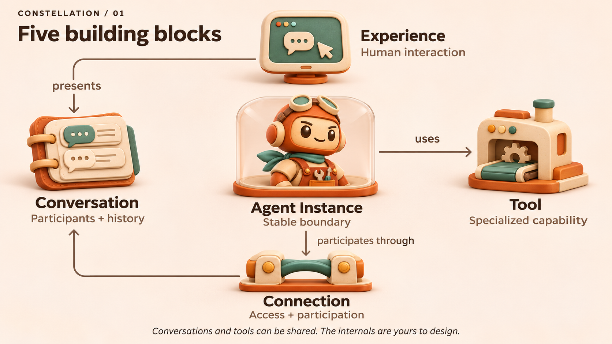

Constellation Instance
Keep an agent’s identity, configuration and private work available across connected experiences.
Download a consumer bundleRepository and documentation →Where it fits
One selected-engine implementation of Agent Instance, with its own identity and lifecycle.
Outward roles: Agent Instance.

- Constellation Instance contains Identity and private state.
- Constellation Instance contains Management and lifecycle.
- Constellation Instance contains ACP attach boundary.
- ACP attach boundary uses Selected ACP engine.
- Constellation Instance integrates Independent connectors.
The five Constellation building blocks

Requirements, map sources, and implementation details
- Constellation Runtime is one compatible engine choice, not a required internal module of every Agent Instance.
- Connectors retain their own installations and platform credentials; Instance does not contain them.
- Internal nodes are implementation responsibilities, not assertions that separate repositories exist.
- README.md · reviewed 2178d36a4b987f15a0b70f2854cd530895f203b6
- contracts/README.md · reviewed 2178d36a4b987f15a0b70f2854cd530895f203b6
- docs/acp-boundary.md · reviewed 2178d36a4b987f15a0b70f2854cd530895f203b6